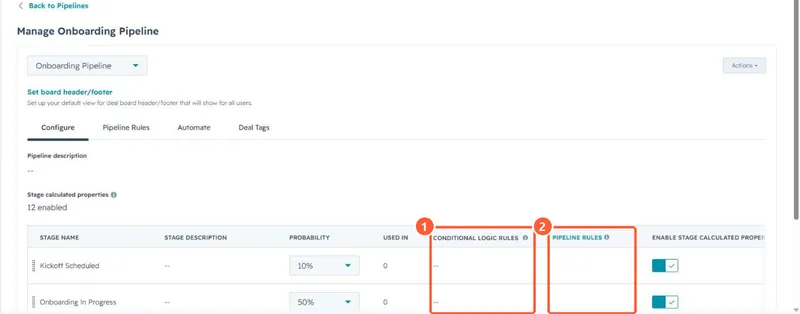

Short answer
Each stage row in a pipeline's Configure tab has a Conditional logic rules column. Add a rule to show certain properties, or make them required, when a user manually creates a record in that stage or moves one into it. The properties must already exist. HubSpot's example is requiring a setup notes field before Closed Won so onboarding has what it needs.
1. The column
In my demo portal no stages have rules yet, so the column shows dashes.


2. What it does and does not cover
- Applies when people move or create records by hand, from the board, record or create form.
- Workflows, imports and integrations are separate paths, so check those if a field is still empty.
- Property-based logic on any record is a different feature. See conditional property logic.
3. Combine with rules
Pipeline rules stop skipping or moving backwards, so reps cannot jump past the stage that asks for the field. See deal pipeline rules.